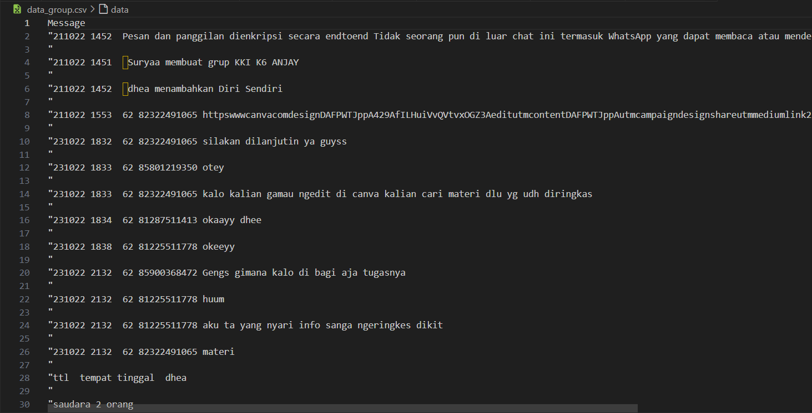

Laporan Hasil Clustering
Nama: Muhammad Alief Adhitya Pratama
NIM: L200220281
Penjelasan Langkah-langkah
-
Langkah 1: Data dimuat dari file CSV yang berisi pesan.
-
Langkah 2: Data diproses menggunakan TF-IDF untuk merepresentasikan pesan dalam bentuk numerik.
 -
Langkah 3 & 4: Data dikelompokkan menggunakan algoritma K-Means dengan berbagai jumlah cluster.

-
Langkah 5: Hasil clustering ditampilkan dalam laporan HTML.
Hasil Klustering untuk 2 Cluster
| Kluster | Kata yang sering muncul |
|---|---|
| 1 | orang, saudara, nilai |
| 2 | 62, 231022, 271022 |
Hasil Klustering untuk 3 Cluster
| Kluster | Kata yang sering muncul |
|---|---|
| 1 | orang, saudara, nilai |
| 2 | 271022, 62, 85713949974 |
| 3 | 231022, 62, 82322491065 |
Hasil Klustering untuk 4 Cluster
| Kluster | Kata yang sering muncul |
|---|---|
| 1 | orang, saudara, pendidikan |
| 2 | 271022, 62, 85713949974 |
| 3 | 231022, 62, 82322491065 |
| 4 | nilai, kepemimpinan, orang |
Hasil Klustering untuk 5 Cluster
| Kluster | Kata yang sering muncul |
|---|---|
| 1 | orang, saudara, pendidikan |
| 2 | 85801219350, tidak, disertakan |
| 3 | 231022, 62, 82322491065 |
| 4 | nilai, kepemimpinan, orang |
| 5 | 271022, 85713949974, 62 |